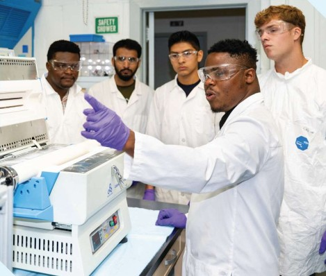
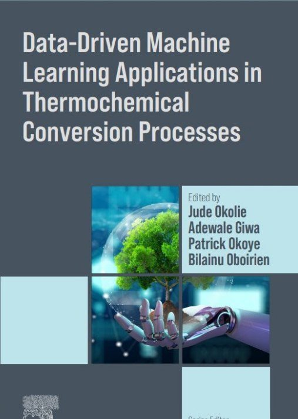
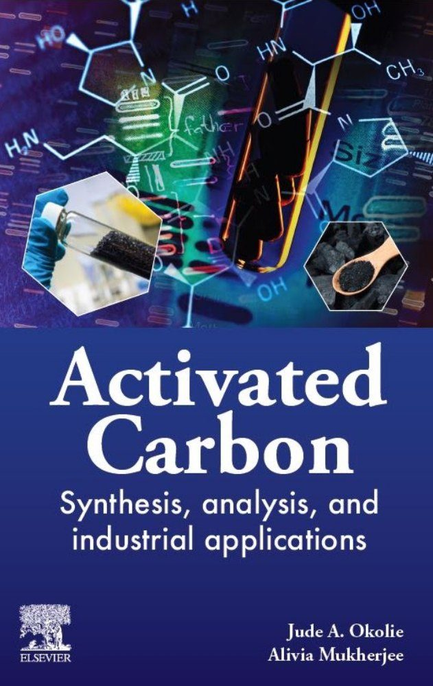
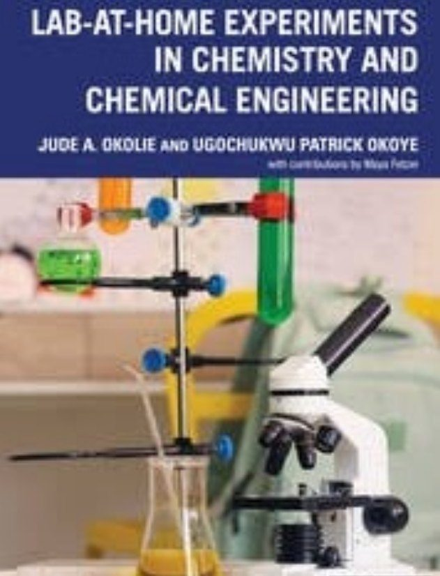

Turning waste into clean energy and sustainable materials
The present society faces the challenges of increasing energy demand, climate change and environmental pollution. It is imperative to develop innovative processes that can transform waste materials into valuable resources for energy and environmental applications. Biofuels, biomaterials and green chemicals are envisioned to play a significant role in the global energy transition. Our research combines experimental analysis with process design and simulation, control and optimization, energy system modelling and life cycle assessment to address several environmental and energy challenges.
We combine experiments with modelling, economics and machine learning to answer three questions: how waste can be managed while meeting rising energy demand; how to optimize the cost and efficiency of waste-to-value processes; and how to develop new materials for sustainable fuel, food security and human health.
Step 01Experiments
Reactor studies in hydrothermal liquefaction, pyrolysis, gasification and chemical looping.
Step 02Process design
Process design and simulation, control and optimization of integrated conversion routes.
Step 03Systems & economics
Energy system modelling, techno-economic analysis and life cycle assessment.
Step 04Machine learning
Data-driven models that predict and optimize thermochemical processes.

Principal investigator
Dr. Jude A. Okolie
Dr. Jude A. Okolie is an Assistant Professor in the Department of Chemical Engineering at Bucknell University, where he leads the SETD Research Group. He previously served as an Assistant Professor of Engineering Pathways at the University of Oklahoma.
His research focuses on the thermochemical conversion of waste materials into green fuels, hydrochar and biochar for environmental remediation, and process simulation and AI/machine learning for climate change, environmental pollution and sustainable agriculture. His honors include the 2026 ACS CES Award for Incorporating Sustainability into Chemical Education, the George Ira Hanson Energy Award and the Encyclopedia 2023 Outstanding Contributor Award.
Edited volumes and textbooks on biofuels, hydrogen, carbon materials, machine learning and hands-on learning.

Data-Driven Machine Learning Applications in Thermochemical Conversion ProcessesEdited by J. Okolie, A. Giwa, P. Okoye, B. Oboirien · Elsevier · ISBN 978-0-443-33372-9
Nanomaterials for Sustainable Hydrogen Production and StorageEdited by J.A. Okolie, E.I. Epelle, A. Mukherjee, A.E.D. Mahmoud · CRC Press

Activated Carbon: Synthesis, Analysis, and Industrial ApplicationsJ.A. Okolie, A. Mukherjee · Elsevier

Lab-at-Home Experiments in Chemistry and Chemical EngineeringJ.A. Okolie, U.P. Okoye, with contributions by Maya Fetzer
BiofuelEdited by P.U. Okoye, J.A. Okolie, S. Kolisnychenko · Trans Tech Publications
Join the group
“I don't turn students away because research is mostly about having a space to explore. All they need to work with me is interest, passion and discipline.” We welcome undergraduate and graduate students and collaborators interested in waste valorization, hydrogen, carbon capture and process modelling.


 Omuhle Lethiwe NdhlovuUndergraduate, Chemical Engineering & Engineering Management
Omuhle Lethiwe NdhlovuUndergraduate, Chemical Engineering & Engineering Management Jongkuch Nhial NyuonUndergraduate, Chemical Engineering, class of 2027
Jongkuch Nhial NyuonUndergraduate, Chemical Engineering, class of 2027